Morning: NGS Bioinformatics, then this. Afternoon, 13:00–17:00:
EEE338_2026_Command_Practice
EEE338_2026_Claude_Code_part2Wikipedia
Unix (officially trademarked as UNIX) is a
multitasking,
multi-user computer
operating system
originally developed in 1969 by a group of
AT&T employees at Bell Labs,Operating System
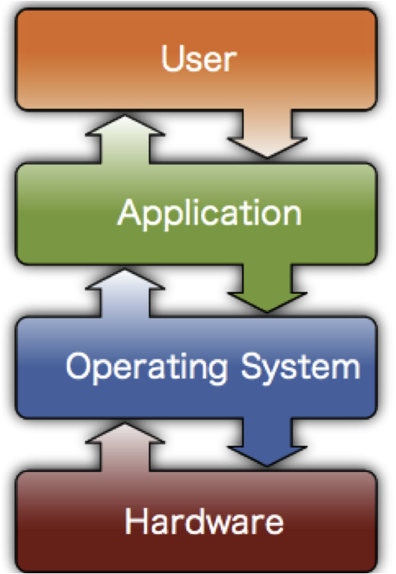
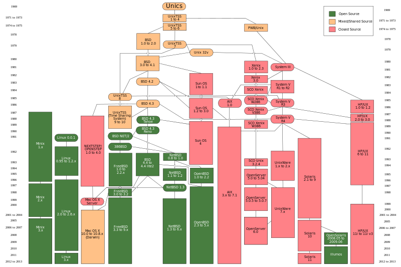
Wikipedia
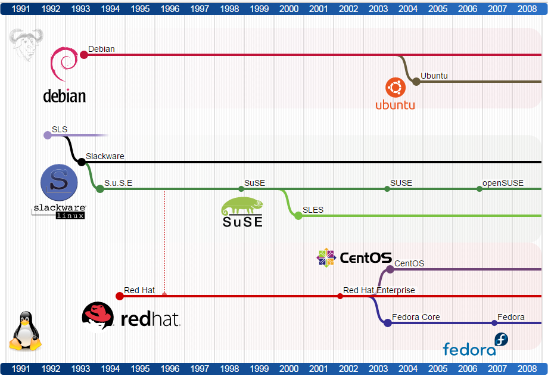
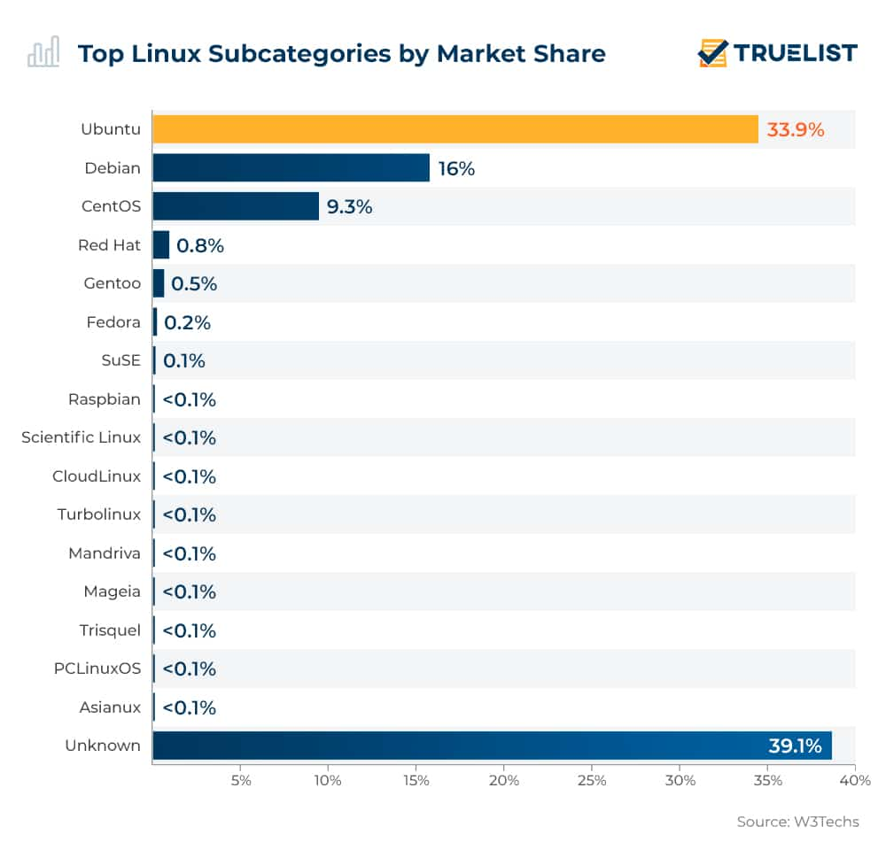
Science cloud node (S3IT)
Not a letter, not a word: a chunk the model was trained to see as one thing.
ATGC is not a word. Sequence and quality lines are cut almost one token per character — three times the price of prose, byte for byte.hal_L_C.fastq is 134 MB → about 134 million tokens: 134× the largest context window there is, and some 400 dollars at 3 dollars a million. You do not paste data at an agent. You give it a command that reads the data.@fgcz-kl-003:~
$ ls -l /srv/GT/reference/Homo_sapiens/GENCODE/GRCh38.p13/Sequence/WholeGenomeFasta/genome.fa
-rw-rw-r-- 1 lopitz SG_Employees 3138499896 Nov 5 2019 genome.fa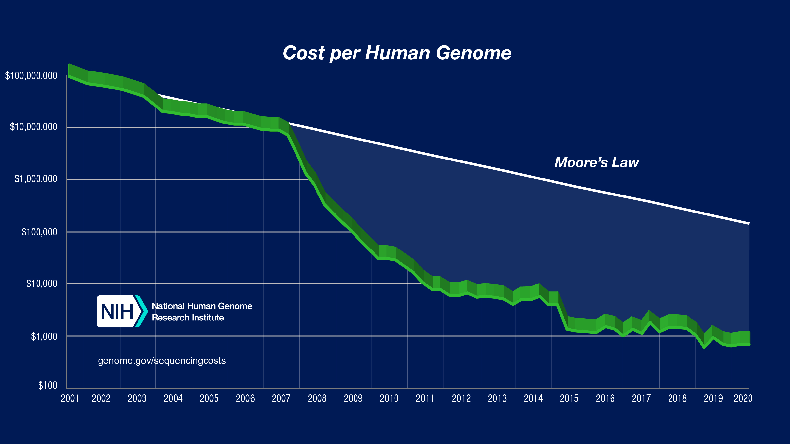
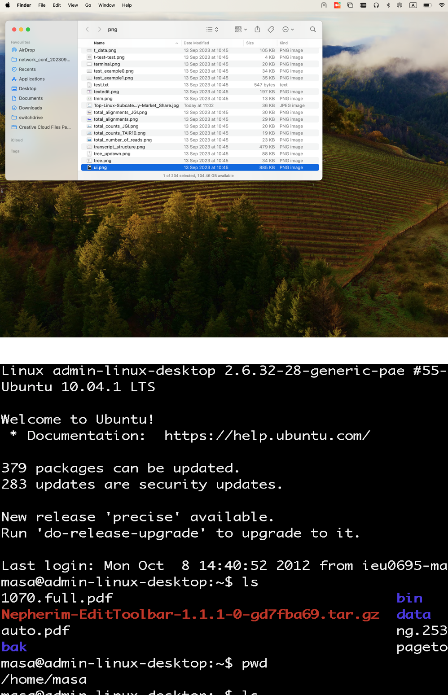
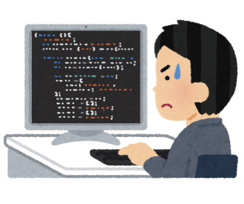
You have to construct the tree image in your mind
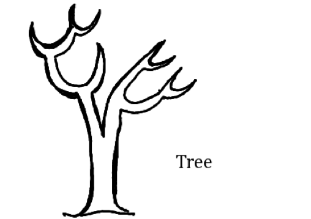
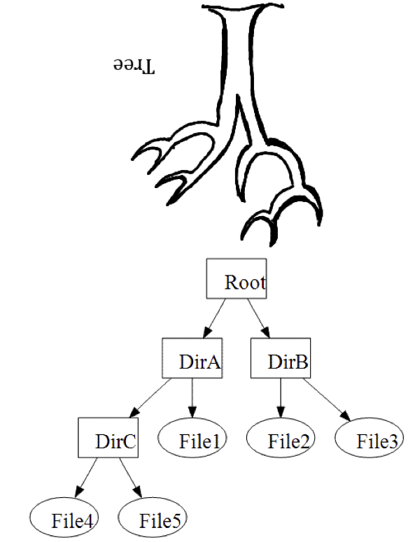
Home, Root, Current, Parent
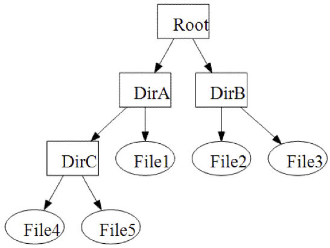
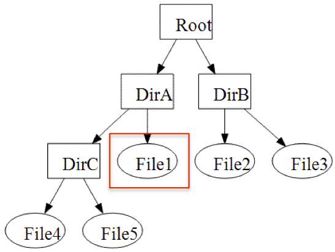
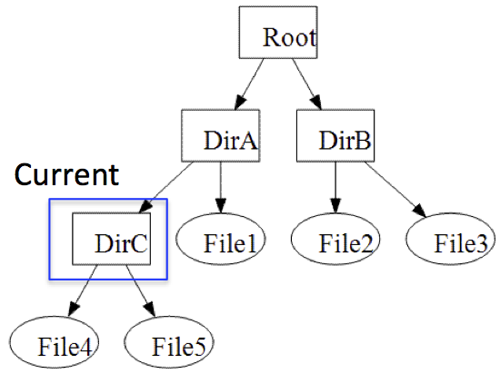
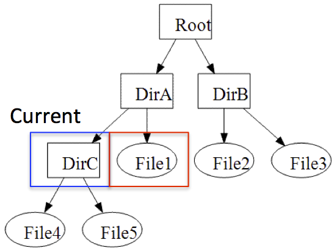
When you are working at /home/user/work directory, where is the parent directory?
/home/user, ..You are now working at your home directory, /home/user. Describe the location of the file, /home/work/file1.txt, using relative path.
../work/file1.txtWhat you have to do next:
Tips: ask Claude Code | ask me if you want to know more about the function and/or usage
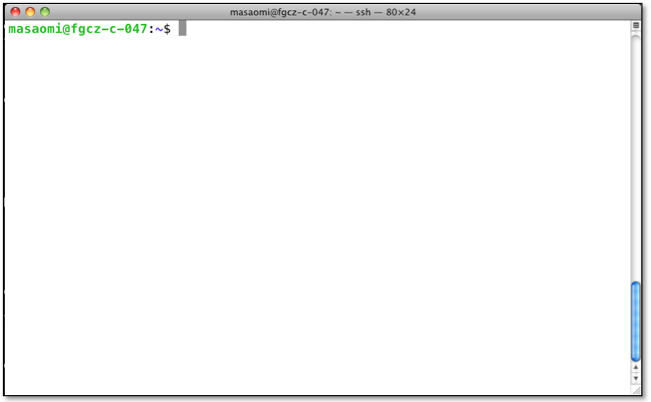
command [options] [arguments]
command -h
command --help
man commandAsk Claude Code, "how do I use the xxx command?" — then check what it tells you against command --help and man command on this machine. It is faster than a search engine and it is wrong in different ways; the two lines above are how you find out which.
mkdir [dir name]
$ mkdir my_dir
$ mkdir work_dir
ls ([dir name])
ls -l ([dir name])
ls -lh ([dir name])$ ls
$ ls ..
$ ls /home/masa
Make your_name directory in home directory , and make sure it is certainly made there
mkdir masa
lsDemonstration
Check it also in Finder
cd [dir path]$ cd
$ cd /home/masa/work
$ cd ..
pwd$ pwd
Change the working directory to ~/your_account, and check the absolute path of the current directory
$ cd ~/masaomi
$ pwd
cat [file]
less [file]$ cat file.txt
$ less file.txt
$ more file.txt
nano [file name]
vi [file name]
emacs [file name]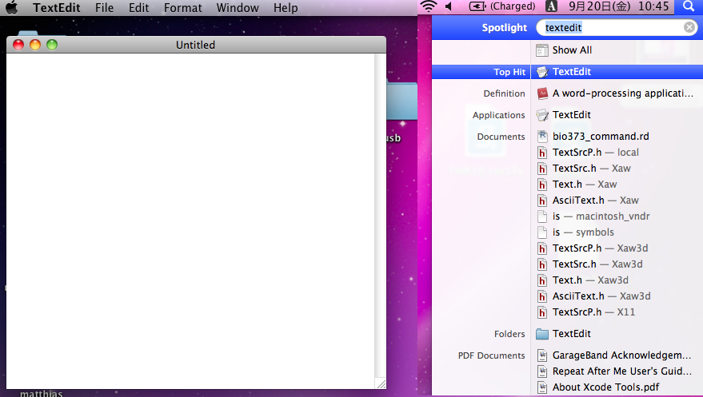
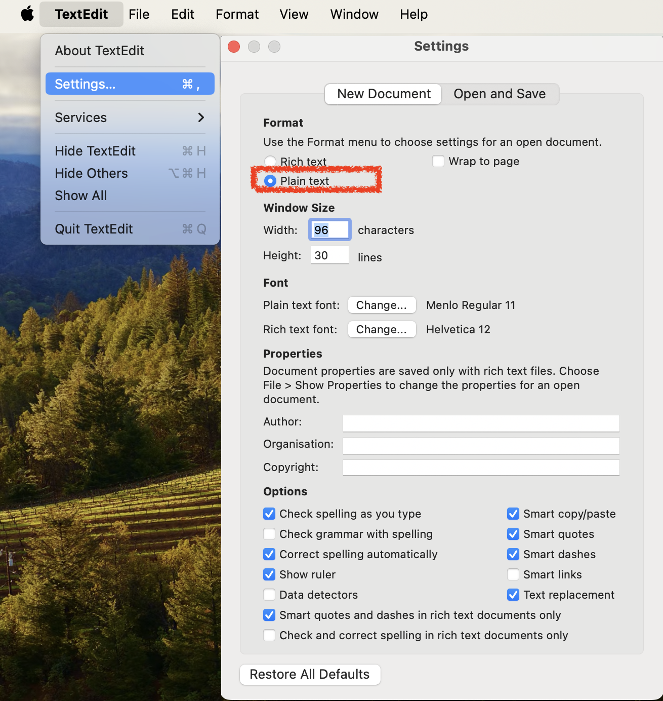
file [file name]If you do not know what type of a file it is, I recommend checking the file type everytime before opening it by text editor or cat, less command.
cp [original file] [target]
cp -r [original dir] [target]$ cp file1.txt file2.txt
$ cp file1.txt dir1/
$ cp file1.txt ..
mv [original] [taget]$ mv file1.txt file2.txt
$ mv file1.txt dir1/
$ mv file1.txt ..
rm [file name]
rm -r [dir name]$ rm file1.txt
$ rm -r dir1
Achtung!! Impossible to restore!!
The most dangerous command!!
history
!!
![number]Example
pw[TAB][TAB]
ls [TAB][TAB]
This is very useful to avoid typos
Example
ls > file_list.dat
cat file_list.datExample
history | grep 'cat'
ls -l | sort -k 4Compress
gzip [file]Decompress
gunzip [file]Compress tar + gzip
tar zcvf [archive name] [dir]Decompress tar + gzip
tar zxvf [archive name]File extension is usually .tgz or .tar.gz
Compress [your_name] directory
tar zcvf masa.tgz masaDecompress the archive
tar zxvf masa.tgz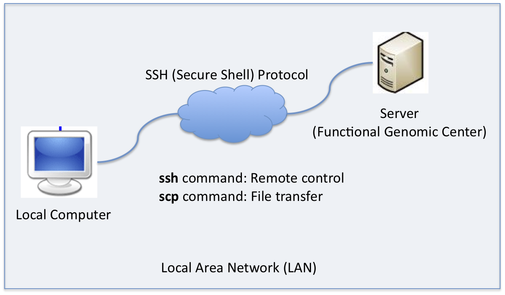
ssh: Secure SHell
scp: Secure CoPy
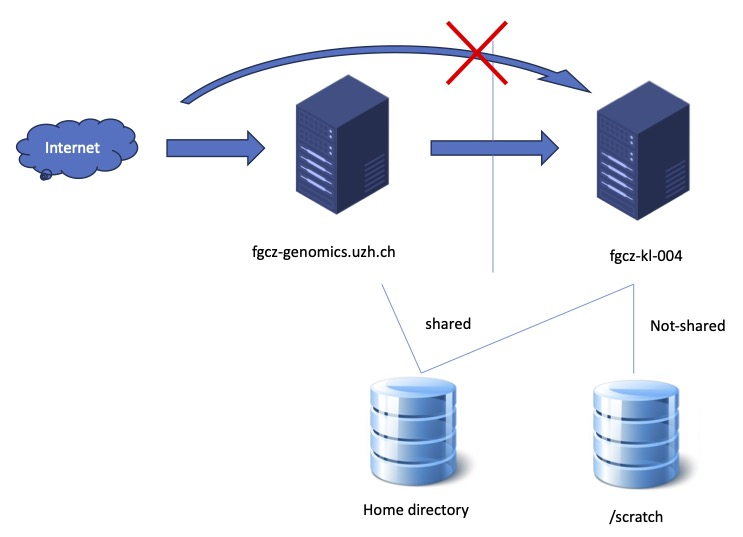
ssh [remote-computer]
ssh [user name]@[remote-computer]Example
$ ssh user_name@server
to logtout, type exit
scp file [server]:[path]
scp -r dir [server]:[path]
scp [server]:[path] [target]$ scp server:data/TAIR10.fasta .
$ scp test.dat server:work/masa/
Computer programming is the comprehensive
process that leads from an original
formulation of a computing problem to
executable programs. (Wikipedia)Benchmark: https://attractivechaos.github.io/plb/
TIOBE Index: https://www.tiobe.com/tiobe-index/
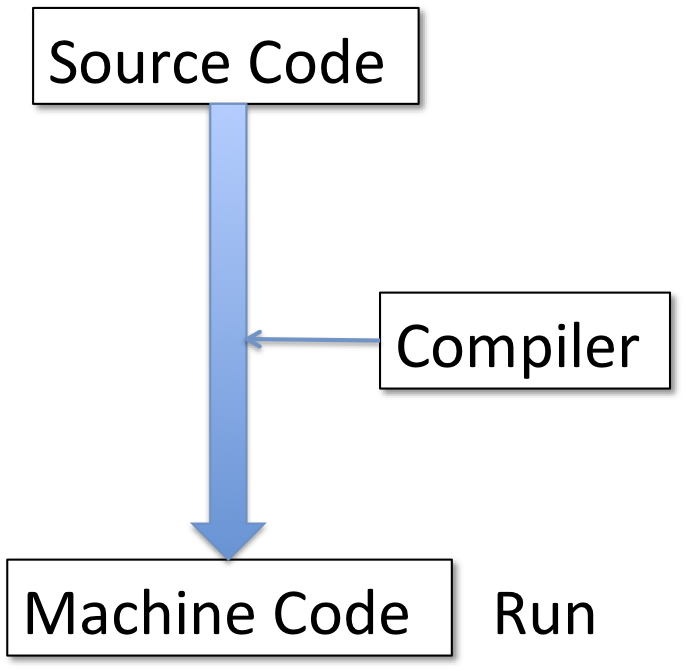
Convert Source Code to Machine Code, and run.
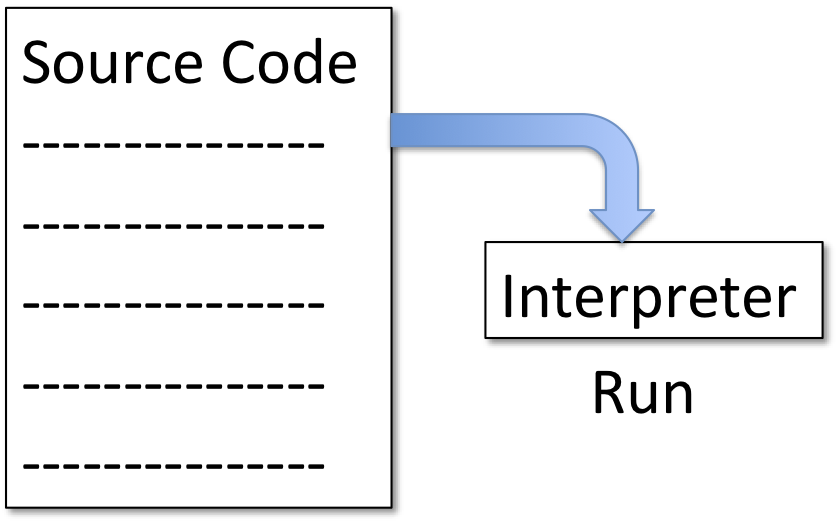
Loading code line by line, and run.
It is easier to learn an interpreter language
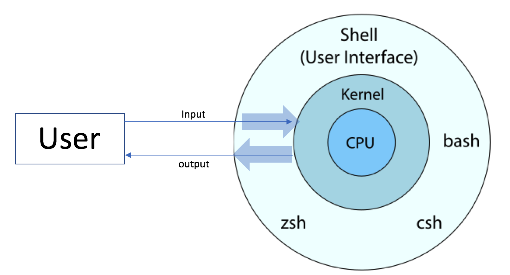
Shell type
sh: Bourne shell
bash: Bourne-Again shell, default in Linux
csh: C shell
zsh: Z shell
echo $SHELL
Batch process of commands
command1
command2
command3
command4Unix commands
pwd
ls
sleep 3
echo 'END'Demonstration
sh test.sh
bash test.sh
csh test.shpossible: shell script to execute shell scripts...
Shell and other software sometimes use some specific values in the environment
env
env | grep SHELLCommon variables and how to use them:
echo $HOME # Home directory
echo $USER # Current user name
echo $PATH # Command search paths
echo $SHELL # Current shellSetting your own variables:
MY_VAR="Hello World"
echo $MY_VAR
export MY_VAR # Make it available to other programsYou type a name, not a location. PATH is the list of places, in order, and the shell stops at the first one that has it.
which fastqc tells you which one you actually got — here /usr/local/ngseq/packages/QC/FastQC/0.12.1/fastqc.command not found means not on PATH, not “not installed”. On this machine the answer is module avail, never an installer.which is how you find out which one you are../myscript.sh runsbash myscript.sh needs no chmod, no ./ and no shebang — you named the interpreter yourself. That is how every script in this course is run.chmod +x does not make a file a program. It gives the kernel permission to try.if [ condition ]; then
commands
else
default_commands
fiCommon conditions:
[ -f file ] - file exists[ -d dir ] - directory exists[ "$var" = "value" ] - string comparisonwhile [ condition ]; do
commands
doneCommon patterns:
# Counter loop
count=1
while [ $count -le 5 ]; do
echo "Count: $count"
count=$((count + 1))
done#!/bin/bash
# process_files.sh - Process FASTQ files
# Set variables
INPUT_DIR="$1"
# Process each FASTQ file
for file in "$INPUT_DIR"/*.fastq; do
if [ -f "$file" ]; then
filename=$(basename "$file" .fastq)
echo "Processing $filename..."
# Count reads and save to output
read_count=$(grep -c "^@" "$file")
echo "$filename: $read_count reads" >> summary.txt
fi
doneBioinformatics requires
A car used to be repairable by whoever owned it. Then cars got complicated and repairing one became somebody’s job — but drivers still change a tyre, check the oil, and know what a flat battery looks like at six in the morning. The same line is moving in code.
Everything new lands on the grey side, so the bar keeps getting longer and the green does not get shorter. It is the whole of your leverage: it is what lets you ask for the right thing, and notice when you did not get it.
rm -rf /*. It ran, and kept going until it reached something you do not ownNext: Unix command practice!!